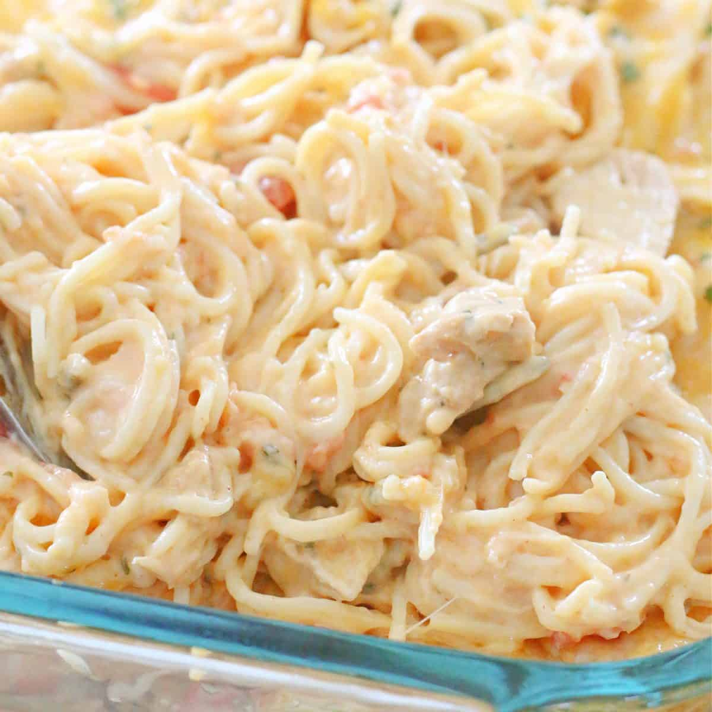

Chicken Spaghetti

Our Little Secret
I have made this as a quick meal for my work week for years.
Nobody said a mom could not take shortcuts, right?
Ingredients
1 Can of Diced Tomatoes with Green Chiles
1 Box of Sphagetti Noodles (cooked)
4 Cloves of Garlic (minced)
2 Tablespoons of Olive Oil
Steps
Boil noodles until done.
Saute garlic in Olive Oil.
Add Cream Cheese and juice from tomatoes/green chiles
Once melted, add remaining ingredients and combine with noodles.
Bake at 350 degrees until heated through. May top with Mozzerella
cheese if desired.